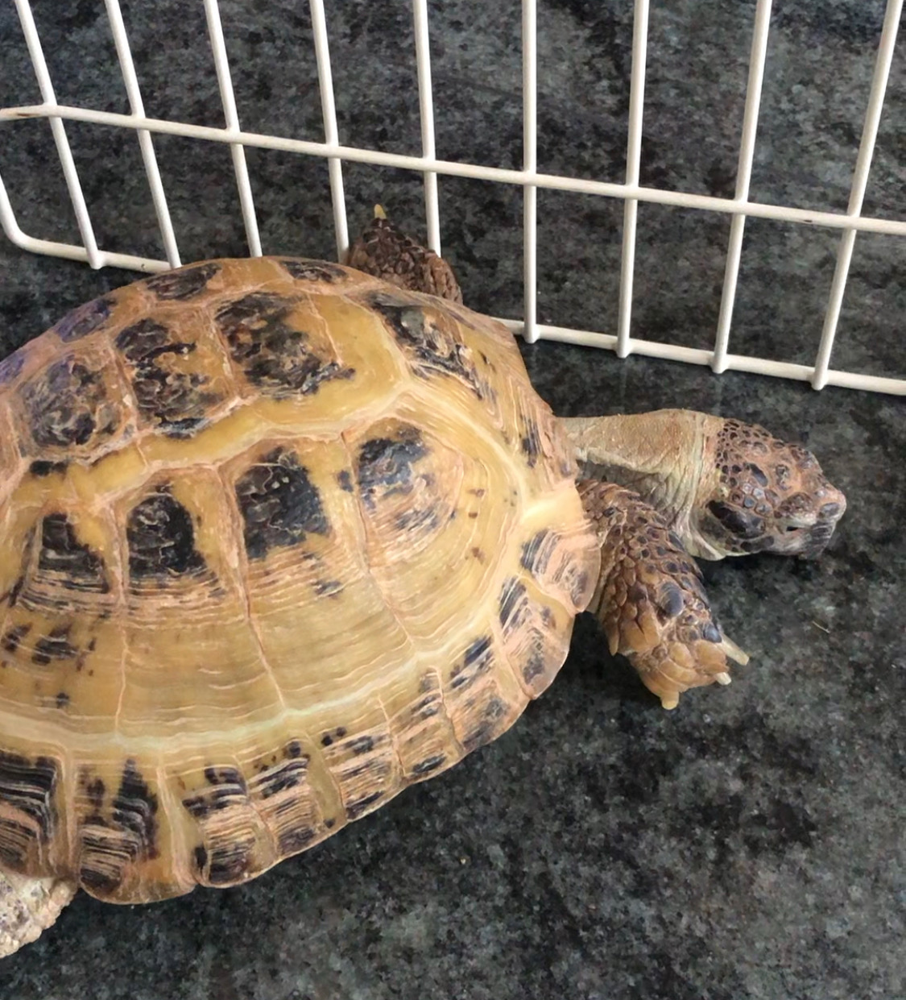

All About Me
What is your name?
Emily Popovitz
Where are you from?
Long Island, New York
When is your birthday?
February 28th
Why did you choose to study Communication Design?
I really enjoy digital art and branding.
What are you most inspired by?
My grandparents house and album covers.
What has been your favorite class so far? Why?
I enjoyed taking an Editorial Concepts class last year, we made a book of photos as a class for our finals project.
What are you hoping to learn in this class?
I'd like to improve on my basic coding skills so I can use them to make interactive websites.
What do you like to do in your spare time?
I like to paint nails in my free time.
When you imagine a graphic designer, what do you think they do on a day to day?
Receive work from clients asking to help design different elements for a project. (ex: logos)
When you imagine a developer, what do you th ink they do on a day to day?
Create code for different clients
Where do you see yourself after graduating? What kind of job do you want to have?
Possibly working for a graphic design firm.
Do you consider yourself an artist, a designer, both, or neither?
I'm not sure I would call myself either, for now I would say I am an art student.
What kind of design classes have you taken before this one?
Typography and Visual Design,
Do you know most of the students in our class already?
No.
List your favorite typefaces.
- Helvetica
- Baskerville
- Clarendon
What are you top 3 favorite colors?
Which artists do you like?
Mark Ryden, John Waters
List out some music that you like to listen to
Melvins, Hole, Jorja Smith
Did anything interesting happen over winter break?
I went to Jamaica with my family.
Have you ever built a website?
No.
Do you have any questions for me?
No!
What is your first memory of using the internet?
Play Webkinz.
Do you have a favorite place to visit?
I like going to my grandparents house in Brighton Beach.
Do you speak any other languages?
Russian, but I'm not completely fluent.
What is your favorite food?
Chocolate chip cookies.
What is your favorite animal?
Turtles
Do you have a pet?
I have three dogs and a turtle
Is there any other information you’d like me to know?
I have three dogs and a turtle
